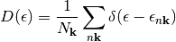
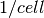

cmspy.xtal package¶
Subpackages¶
Submodules¶
cmspy.xtal.bands module¶
-
cmspy.xtal.bands.multiplets(bands, kpoints_idx=None, emin=None, emax=None)¶ Determine the multiplets for a set of bands
Parameters: bands: ndarray, shape (nkpts, nbnds)
kpoints_idx: ndarray
indices of k-points at which to determine multiplets
emin: float, optional
emax: float, optional
Returns: list:
list of lists of tuples, one list each k-point, each k-point list is a list of tuples, each tuple is a tuple of band indices and the energy
cmspy.xtal.calc module¶
-
cmspy.xtal.calc.calc_dos(bands, e, sigma=0.1, spin_factor=2, integrate=False)¶ Calulate the density of states
The density of states if given by the following expression

Parameters: bands: ndarray, shape (nkpts, nbnds)
band energies
emin: float, optional
lower energy bound, min(bands) if not provided
emax: float, optional
upper energy bound, max(bands) if not provided
de: float, optional
energy step
sigma: float, optional
Guassian broadening for the delta function
spin_factor: int
spin degeneracy factor
Notes
The units of energy for the bands should match that given for the other parameters. When the defaults are used, they will have the same energy unit as the band energies.
-
cmspy.xtal.calc.calc_fermi_energy(bands, nelec, **kwargs)¶ Calculates the Fermi energy using the bisection method
Parameters: bands: ndarray, shape (nkpts, nbnds)
band energies
nelec: int
number of electrons in the system
-
cmspy.xtal.calc.compute_deltas(bands, kpq=None, efermi=None, emin=None, emax=None)¶ Calulate the joint density of states (JDOS)
Parameters: bands: ndarray, shape (nkpts, nbnds)
band energies
omega: ndarray, shape (nfreq,)
energies at which to evaluate the JDOS
kpq: ndarray, shape(nkpts):
indices of the point ..math:mathbf{k}+mathbf{q}
efermi: float, optional
Fermi energy
sigma: float, optional
Guassian broadening for the delta function
spin_factor: int
spin degeneracy factor
Notes
The units of energy for the bands should match that given for the other parameters. When the defaults are used, they will have the same energy unit as the band energies.
-
cmspy.xtal.calc.compute_jdos(bands, omega, kweights=None, kpq=None, efermi=None, smearing='gaussian', sigma=0.1, spin_factor=2)¶ Calulate the joint density of states (JDOS)
Parameters: bands: ndarray, shape (nkpts, nbnds)
band energies
omega: ndarray, shape (nfreq,)
energies at which to evaluate the JDOS
kpq: ndarray, shape(nkpts):
indices of the point ..math:mathbf{k}+mathbf{q}
efermi: float, optional
Fermi energy
sigma: float, optional
Guassian broadening for the delta function
spin_factor: int
spin degeneracy factor
Notes
The units of energy for the bands should match that given for the other parameters. When the defaults are used, they will have the same energy unit as the band energies.
-
cmspy.xtal.calc.compute_jdos_eh(bands, omega, bins, kweights=None, kpq=None, efermi=None, smearing='gaussian', sigma=0.1)¶ Calulate the joint density of states (JDOS)
Parameters: bands: ndarray, shape (nkpts, nbnds)
band energies
omega: ndarray, shape (nfreq,)
energies at which to evaluate the JDOS
kpq: ndarray, shape(nkpts):
indices of the point ..math:mathbf{k}+mathbf{q}
efermi: float, optional
Fermi energy
sigma: float, optional
Guassian broadening for the delta function
spin_factor: int
spin degeneracy factor
Notes
The units of energy for the bands should match that given for the other parameters. When the defaults are used, they will have the same energy unit as the band energies.
cmspy.xtal.common module¶
-
class
cmspy.xtal.common.BandStructure(input_array, kpoints=None, kpath=None)¶ Bases:
cmspy.xtal.common.WavefunctionDataset-
plot_gnuplot(ispn=0, gp=None, **plot_kwargs)¶
-
plot_matplotlib(ispn=0, fig=None, *args, **plot_kwargs)¶
-
set_eref(eref)¶
-
-
class
cmspy.xtal.common.WavefunctionDataset(input_array, kpoints=None)¶ Bases:
objectBase class for representing crystal data
Most data associated with a crystal comes with indicies indicating the k-point, band index, and spin index.
Parameters: a: array_like, shape (nkpts, nbnds, nspns)
wavefunction dataset
kpoints: array_like, shape (nkpts, 3), optional
k-points
Attributes
nkpts: int number of k-points nbnds: int number of bands nspns: int number of spins -
kpoints¶
-
nbnds¶
-
nkpts¶
-
nspns¶
-
cmspy.xtal.ct module¶
-
class
cmspy.xtal.ct.WavefunctionDatasetConvergenceTestPlotter(data, xvals, data_ref=None)¶ Bases:
objectClass for plotting convergence tests.
The data is that of a WavefunctionDataset.
Attributes
data (ndarray or list of ndarray) An array or list of arrays that each have a shape corresponding to (nkpts, nbnds, nspns, nxvals). The last dimension corresponds to the convergence parameter. xvals: ndarray An array of values corresponding to the convergence parameter. -
data_ref¶
-
get_gnuplot_data_objs_array(**kwargs)¶
-
get_gnuplot_data_objs_list(**kwargs)¶
-
plot(**plot_args)¶
-
cmspy.xtal.kptutils module¶
-
cmspy.xtal.kptutils.construct_point_mapping(pts_from, pts_to, tol=2.2204460492503131e-16)¶ Find the index of points from one array in another array
Parameters: pts_from: array_like, shape (npts_from, 3)
pts_to: array_like, shape (npts_to, 3)
Returns: mapping: ndarray
mapping[i] = index of pts_from[i] in pts_to
Raises: Exception
if there is a point in pts_from that does not map to exactly one point in pts_to
-
cmspy.xtal.kptutils.create_kmap(k_from, k_to, syms, return_symmetry_index=False)¶ Create a map from one list of k-points to another list
The k-points and symmetries need to be in the same coordinates
-
cmspy.xtal.kptutils.find_vector(pt_target, pts_in, idx=None, tol=2.2204460492503131e-16)¶ Find the index of a point in an array of points
Parameters: pt_target: array_like, shape (N,)
point to find
pts_in: array_like, shape (M,N)
array of points in which to find target point
idx: ndarray, optional
precomputed indices, useful for when this function is called many times
tol: float, optional
tolerance for matching the point
-
cmspy.xtal.kptutils.find_vector_int(pt_target, pts_in, idx=None)¶ Find the index of a point in an array of points
Parameters: pt_target: array_like, shape (N,)
point to find
pts_in: array_like, shape (M,N)
array of points in which to find target point
idx: ndarray, optional
precomputed indices, useful for when this function is called many times
-
cmspy.xtal.kptutils.get_kpq_index(kpoints_int, qpoint_int, grid_dims=None)¶
-
cmspy.xtal.kptutils.kgrid(n1, n2, n3, periodic=True, integer=False)¶ Generate a uniform (Gamma centered) grid of k-points in the primitive reciprocal unit cell. The k-points are given in terms of crystal coordinates.
Parameters: n1 : int
number of k-points along

n2 : int
number of k-points along

n3 : int
number of k-points along

periodic : boolean, optional
- True:
DO NOT include redundant boundary points
- False:
Include redundant boundary points, this is useful for interpolation
integer : boolean, optional
kpoints are given in integer form (k1*n1, k2*n2, k3*n3)
Returns: kpoints : ndarray, shape (nkpts=n1*n2*n3, 3)
-
cmspy.xtal.kptutils.kmap_2periodic(nk1, nk2, nk3)¶
-
cmspy.xtal.kptutils.kmap_grid(grid1, grid2)¶ Map k-points from one regular grid to another
Parameters: grid1 :
coarser grid
grid2 :
finer grid
Returns: idx :
indices of k-points on grid1 inside grid2
-
cmspy.xtal.kptutils.kpt_to_unit_cell(kpt, return_gvec=False)¶ Translate k-point to the reciprocal unit cell
The resulting k-point will have fractional coordinates all in [0,1)
-
cmspy.xtal.kptutils.print_kpoints(kpoints, stream=<open file '<stdout>', mode 'w'>)¶
-
cmspy.xtal.kptutils.read_kpath(fname)¶
-
cmspy.xtal.kptutils.reduce(kpoints, syms, return_kweights=False, return_kmap=False)¶
-
cmspy.xtal.kptutils.reduce_grid(nk1, nk2, nk3, syms, return_kweights=False, return_kmap=False)¶
-
cmspy.xtal.kptutils.subgroup(qpt, syms)¶
-
cmspy.xtal.kptutils.to_bz(kpoints, gbz)¶
-
cmspy.xtal.kptutils.to_unit_cell(kpoints, return_gvec=False, copy=True)¶
cmspy.xtal.structure module¶
-
class
cmspy.xtal.structure.EquationOfState(volumes, energies, eos_string=None)¶ Bases:
object-
fit(eos_string='murnaghan')¶
-
plot(eos_string='Murnaghan', interact=False)¶
-
-
cmspy.xtal.structure.murnaghan(V, E0, V0, K0, K0p)¶
cmspy.xtal.utils module¶
-
cmspy.xtal.utils.cartesian2crystal(coords, lattice_vectors)¶ Convert vectors expressed in Cartesian coordinates to crystal coordinates
Parameters: coords: ndarray, shape (..., npts, 3)
lattice_vectors: ndarray, shape (3, 3)
Returns: ndarray
-
cmspy.xtal.utils.chemical_potential(e, esplit, egap, dos, n, T)¶ Calculate the chemical potential for a given amount of doping
Parameters: e : ndarray
energy grid for the density of states
esplit : float
the energy that separates the electrons from holes (e.g. the midgap energy)
egap : float
energy gap
dos : ndarray
density of states (states/cell/energy)
n : float
doping concentration in , negative for electron doping
T : float
the temperature
-
cmspy.xtal.utils.coordinate(lattice_vectors, basis_vectors, coordination_numbers)¶ Coordinate each atom in the basis with a specfic number of neighbors
Parameters: lattice_vectors : array_like, shape (3, 3)
basis_vectors : array_like, shape (natms, 3)
basis vectors in crystal coordinates
coordination_numbers: array_like, shape (natms,)
-
cmspy.xtal.utils.crystal2cartesian(coords, lattice_vectors)¶ Convert vectors expressed in crystal coordinates to Cartesian coordinates
Parameters: coords: ndarray, shape (..., npts, 3)
lattice_vectors: ndarray, shape (3, 3)
Returns: ndarray